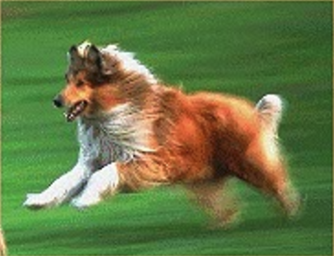

My Dog
My dog Sasha is my best friend she likes to chase the saccer ball when I practice. It is funny to see her running down the field trying to catch the ball with her mouth.It just won't fit!
Once sasha saved my life When I was only 4 years old.Istarted to go into the street to get a ball that had rolled across the street. oF course I did not think to look for cars! Sasha got in front of me and knocked me backwards onto the sidewalk. I was mod until I saw the car go by where would have been. Then I was so happy that Sasha was smarter than I was!
Back to Hector's page
01/05/02